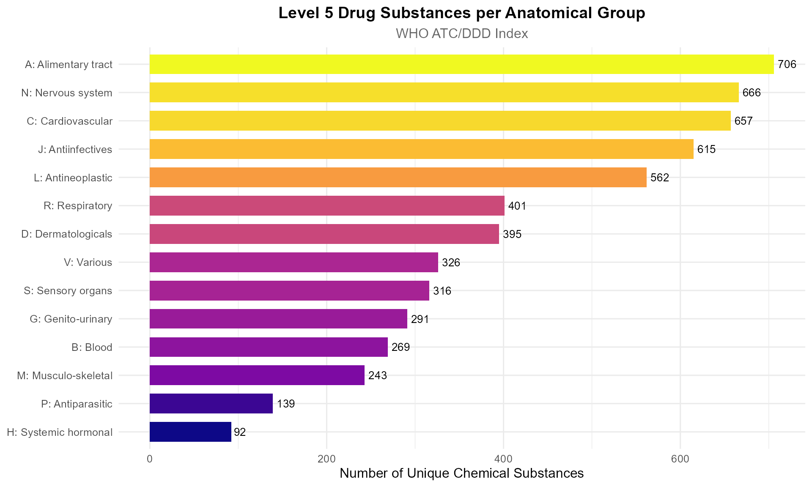
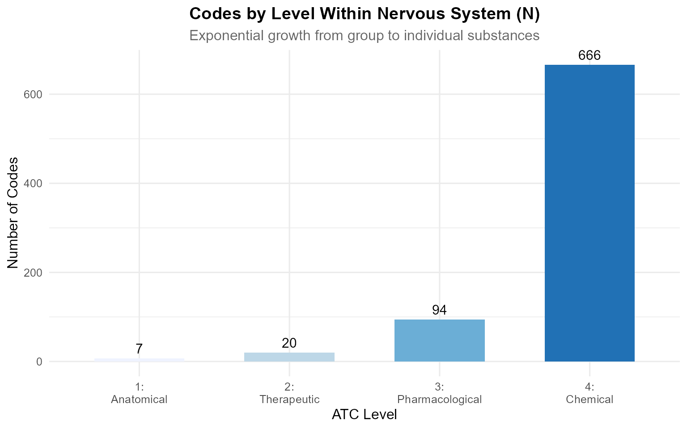

Navigating the ATC Hierarchy
Lucas VHH TRAN
2026-07-14
Source:vignettes/atc-hierarchy.Rmd
atc-hierarchy.RmdIntroduction
The ATC hierarchy is a five-level tree that classifies every drug from broad anatomical group down to individual chemical substance. Navigating this tree is essential for pharmacoepidemiology — you need to answer questions like:
- “Which drugs belong to the beta-blocker class?”
- “What are the children of the statin subclass?”
- “How many Level 5 substances are in the nervous system group?”
This vignette shows you how to traverse, filter, and visualise the
hierarchy using atcddd.
Loading the Offline Database
We start with the bundled WHO snapshot so everything works offline:
codes_path <- system.file("extdata", "WHO_ATC_codes_2026-07-14.csv",
package = "atcddd")
ddd_path <- system.file("extdata", "WHO_ATC_DDD_2026-07-14.csv",
package = "atcddd")
atc_codes <- readr::read_csv(codes_path, show_col_types = FALSE)
atc_ddd <- readr::read_csv(ddd_path, show_col_types = FALSE)
# Add level and parent columns using exported functions
atc_codes <- atc_codes %>%
mutate(
level = atc_level(atc_code),
parent_code = atc_parent(atc_code)
)
cat(sprintf("Loaded %d codes across 5 levels", nrow(atc_codes)))
#> Loaded 6982 codes across 5 levelsUnderstanding ATC Levels
The five levels form a strict tree:
Level 1: C (1 char) Cardiovascular system
Level 2: C10 (3 chars) Lipid modifying agents
Level 3: C10A (4 chars) Lipid modifying agents, plain
Level 4: C10AA (5 chars) HMG CoA reductase inhibitors
Level 5: C10AA01 (7 chars) simvastatinCode Distribution by Level
atc_codes %>%
count(level) %>%
mutate(
pct = round(100 * n / sum(n), 1),
label = case_when(
level == 1 ~ "Anatomical main group",
level == 2 ~ "Therapeutic subgroup",
level == 3 ~ "Pharmacological subgroup",
level == 4 ~ "Chemical subgroup",
level == 5 ~ "Chemical substance"
)
) %>%
arrange(level) %>%
select(label, n, pct)
#> # A tibble: 4 × 3
#> label n pct
#> <chr> <int> <dbl>
#> 1 Therapeutic subgroup 94 1.3
#> 2 Pharmacological subgroup 271 3.9
#> 3 Chemical subgroup 939 13.4
#> 4 Chemical substance 5678 81.3Level 5 (individual substances) dominates — each anatomical group fans out into hundreds of specific drugs.
Finding Drugs by Therapeutic Class
All Statins (HMG CoA Reductase Inhibitors, C10AA)
The most direct way to find a drug class is by its Level 4 code:
atc_codes %>%
filter(grepl("^C10AA", atc_code)) %>%
select(atc_code, atc_name, level)
#> # A tibble: 9 × 3
#> atc_code atc_name level
#> <chr> <chr> <int>
#> 1 C10AA HMG CoA reductase inhibitors 4
#> 2 C10AA01 simvastatin 5
#> 3 C10AA02 lovastatin 5
#> 4 C10AA03 pravastatin 5
#> 5 C10AA04 fluvastatin 5
#> 6 C10AA05 atorvastatin 5
#> 7 C10AA06 cerivastatin 5
#> 8 C10AA07 rosuvastatin 5
#> 9 C10AA08 pitavastatin 5All Beta-Blocking Agents (C07)
# Get all codes under C07
beta_blockers <- atc_codes %>%
filter(grepl("^C07", atc_code))
# Show only Level 4 subgroups (chemical classes)
beta_blockers %>%
filter(level == 4) %>%
select(atc_code, atc_name)
#> # A tibble: 15 × 2
#> atc_code atc_name
#> <chr> <chr>
#> 1 C07AA Beta blocking agents, non-selective
#> 2 C07AB Beta blocking agents, selective
#> 3 C07AG Alpha and beta blocking agents
#> 4 C07BA Beta blocking agents, non-selective, and thiazides
#> 5 C07BB Beta blocking agents, selective, and thiazides
#> 6 C07BG Alpha and beta blocking agents and thiazides
#> 7 C07CA Beta blocking agents, non-selective, and other diuretics
#> 8 C07CB Beta blocking agents, selective, and other diuretics
#> 9 C07CG Alpha and beta blocking agents and other diuretics
#> 10 C07DA Beta blocking agents, non-selective, thiazides and other diuretics
#> 11 C07DB Beta blocking agents, selective, thiazides and other diuretics
#> 12 C07EA Beta blocking agents, non-selective, and vasodilators
#> 13 C07EB Beta blocking agents, selective, and vasodilators
#> 14 C07FB Beta blocking agents and calcium channel blockers
#> 15 C07FX Beta blocking agents, other combinationsAll Level 5 Substances Under a Parent
The new atc_descendants() function returns every code
below a given parent:
# Every descendant under the statin chemical class (C10AA)
atc_descendants("C10AA", atc_codes)
#> [1] "C10AA01" "C10AA02" "C10AA03" "C10AA04" "C10AA05" "C10AA06" "C10AA07"
#> [8] "C10AA08"You can also limit the depth with max_level:
# Under cardiovascular (C) but only down to Level 3
atc_descendants("C", atc_codes, max_level = 3)
#> [1] "C01" "C01A" "C01B" "C01C" "C01D" "C01E" "C02" "C02A" "C02B" "C02C"
#> [11] "C02D" "C02K" "C02L" "C02N" "C03" "C03A" "C03B" "C03C" "C03D" "C03E"
#> [21] "C03X" "C04" "C04A" "C05" "C05A" "C05B" "C05C" "C05X" "C07" "C07A"
#> [31] "C07B" "C07C" "C07D" "C07E" "C07F" "C08" "C08C" "C08D" "C08E" "C08G"
#> [41] "C09" "C09A" "C09B" "C09C" "C09D" "C09X" "C10" "C10A" "C10B"Parent-Child Relationships
The exported functions atc_level() and
atc_parent() let you reconstruct the tree:
# Every code and its direct parent
atc_codes %>%
filter(level >= 2) %>%
select(atc_code, atc_name, level, parent_code) %>%
head(10)
#> # A tibble: 10 × 4
#> atc_code atc_name level parent_code
#> <chr> <chr> <int> <chr>
#> 1 A01 STOMATOLOGICAL PREPARATIONS 2 A
#> 2 A01A STOMATOLOGICAL PREPARATIONS 3 A01
#> 3 A01AA Caries prophylactic agents 4 A01A
#> 4 A01AA01 sodium fluoride 5 A01AA
#> 5 A01AA02 sodium monofluorophosphate 5 A01AA
#> 6 A01AA03 olaflur 5 A01AA
#> 7 A01AA04 stannous fluoride 5 A01AA
#> 8 A01AA30 combinations 5 A01AA
#> 9 A01AA51 sodium fluoride, combinations 5 A01AA
#> 10 A01AB Antiinfectives and antiseptics for local oral tre… 4 A01AFind All Children of a Specific Code
# Use the exported atc_children() function
atc_children("C10AA", atc_codes)
#> [1] "C10AA01" "C10AA02" "C10AA03" "C10AA04" "C10AA05" "C10AA06" "C10AA07"
#> [8] "C10AA08"Find the Full Ancestry of a Drug
trace_ancestry <- function(code) {
parts <- list()
current <- code
while (!is.na(current) && current != "") {
row <- atc_codes %>% filter(atc_code == current)
if (nrow(row) == 0) break
parts[[length(parts) + 1]] <- row
current <- atc_parent(current)
}
bind_rows(rev(parts)) %>%
select(atc_code, atc_name, level)
}
# Trace paracetamol from Level 1 down
trace_ancestry("N02BE01")
#> # A tibble: 4 × 3
#> atc_code atc_name level
#> <chr> <chr> <int>
#> 1 N02 ANALGESICS 2
#> 2 N02B OTHER ANALGESICS AND ANTIPYRETICS 3
#> 3 N02BE Anilides 4
#> 4 N02BE01 paracetamol 5This ancestry trace is valuable for: - Study inclusion criteria — “all analgesics except opioids” - Pharmacovigilance — signal detection within a therapeutic class - Drug utilisation — aggregating consumption by class
Working with the Live API
For up-to-date data, use get_atc_hierarchy():
# Get the complete nervous-system hierarchy (live)
ns_tree <- get_atc_hierarchy("N", max_levels = 5)
# This returns the same enriched structure
ns_tree %>%
select(atc_code, atc_name, level, parent_code, has_children) %>%
head(10)get_atc_hierarchy() adds a has_children
column — TRUE if the code has any sub-classifications,
which is useful for building interactive tree widgets.
Comparing Therapeutic Classes
How Many Drugs in Each Group?
# Count Level 5 substances per Level 1 anatomical group
atc_codes %>%
filter(level == 5) %>%
mutate(anatomical_group = substr(atc_code, 1, 1)) %>%
count(anatomical_group, sort = TRUE) %>%
rename(n_substances = n)
#> # A tibble: 14 × 2
#> anatomical_group n_substances
#> <chr> <int>
#> 1 A 706
#> 2 N 666
#> 3 C 657
#> 4 J 615
#> 5 L 562
#> 6 R 401
#> 7 D 395
#> 8 V 326
#> 9 S 316
#> 10 G 291
#> 11 B 269
#> 12 M 243
#> 13 P 139
#> 14 H 92Groups J (antiinfectives), N (nervous system), and A (alimentary tract) are the largest — reflecting decades of drug development in those therapeutic areas.
Visualising the Hierarchy
Treemap of ATC Level 1 Groups
atc_codes %>%
filter(level == 5) %>%
mutate(group = substr(atc_code, 1, 1)) %>%
count(group, sort = TRUE) %>%
mutate(
group_label = case_when(
group == "A" ~ "A: Alimentary tract",
group == "B" ~ "B: Blood",
group == "C" ~ "C: Cardiovascular",
group == "D" ~ "D: Dermatologicals",
group == "G" ~ "G: Genito-urinary",
group == "H" ~ "H: Systemic hormonal",
group == "J" ~ "J: Antiinfectives",
group == "L" ~ "L: Antineoplastic",
group == "M" ~ "M: Musculo-skeletal",
group == "N" ~ "N: Nervous system",
group == "P" ~ "P: Antiparasitic",
group == "R" ~ "R: Respiratory",
group == "S" ~ "S: Sensory organs",
group == "V" ~ "V: Various",
TRUE ~ group
)
) %>%
ggplot(aes(x = reorder(group_label, n), y = n, fill = n)) +
geom_col(width = 0.7) +
geom_text(aes(label = n), hjust = -0.2, size = 3.5) +
scale_fill_viridis_c(option = "plasma", guide = "none") +
coord_flip() +
labs(
title = "Level 5 Drug Substances per Anatomical Group",
subtitle = "WHO ATC/DDD Index",
x = NULL,
y = "Number of Unique Chemical Substances"
) +
theme_minimal(base_size = 12) +
theme(
plot.title = element_text(face = "bold", hjust = 0.5),
plot.subtitle = element_text(hjust = 0.5, color = "grey40")
)
Hierarchy Depth Within a Branch
# Count codes at each level within Nervous System (N)
atc_codes %>%
filter(grepl("^N", atc_code)) %>%
count(level) %>%
mutate(level_label = case_when(
level == 1 ~ "1: Anatomical",
level == 2 ~ "2: Therapeutic",
level == 3 ~ "3: Pharmacological",
level == 4 ~ "4: Chemical",
level == 5 ~ "5: Substance"
)) %>%
ggplot(aes(x = factor(level), y = n, fill = factor(level))) +
geom_col(width = 0.6) +
geom_text(aes(label = n), vjust = -0.5, size = 4) +
scale_fill_brewer(palette = "Blues", guide = "none") +
scale_x_discrete(labels = c(
"1:\nAnatomical", "2:\nTherapeutic", "3:\nPharmacological",
"4:\nChemical", "5:\nSubstance"
)) +
labs(
title = "Codes by Level Within Nervous System (N)",
subtitle = "Exponential growth from group to individual substances",
x = "ATC Level",
y = "Number of Codes"
) +
theme_minimal(base_size = 12) +
theme(
plot.title = element_text(face = "bold", hjust = 0.5),
plot.subtitle = element_text(hjust = 0.5, color = "grey40")
)
Practical Recipes
Recipe 2: Build a Complete Class-to-Drug Map
# Map: every Level 4 chemical class → all Level 5 substances in it
class_to_drug <- atc_codes %>%
filter(level == 5) %>%
mutate(chemical_class = substr(atc_code, 1, 5)) %>%
select(chemical_class, substance_code = atc_code, substance_name = atc_name)
# Which chemical classes contain "fluoroquinolone"?
atc_codes %>%
filter(level == 4, grepl("fluoroquinolone", atc_name, ignore.case = TRUE)) %>%
inner_join(class_to_drug, by = c("atc_code" = "chemical_class")) %>%
select(chemical_class = atc_code, class_name = atc_name,
substance_code, substance_name)
#> # A tibble: 33 × 4
#> chemical_class class_name substance_code substance_name
#> <chr> <chr> <chr> <chr>
#> 1 J01MA Fluoroquinolones J01MA01 ofloxacin
#> 2 J01MA Fluoroquinolones J01MA02 ciprofloxacin
#> 3 J01MA Fluoroquinolones J01MA03 pefloxacin
#> 4 J01MA Fluoroquinolones J01MA04 enoxacin
#> 5 J01MA Fluoroquinolones J01MA05 temafloxacin
#> 6 J01MA Fluoroquinolones J01MA06 norfloxacin
#> 7 J01MA Fluoroquinolones J01MA07 lomefloxacin
#> 8 J01MA Fluoroquinolones J01MA08 fleroxacin
#> 9 J01MA Fluoroquinolones J01MA09 sparfloxacin
#> 10 J01MA Fluoroquinolones J01MA10 rufloxacin
#> # ℹ 23 more rowsRecipe 3: Check If a Drug Belongs to a Class
drug_in_class <- function(code, class_prefix) {
grepl(paste0("^", class_prefix), code)
}
# Is atorvastatin a cardiovascular drug?
drug_in_class("C10AA05", "C") # TRUE
#> [1] TRUE
# Is it an antiinfective?
drug_in_class("C10AA05", "J") # FALSE
#> [1] FALSEKey Takeaways
Every ATC code is a node in a strict 5-level tree — parent-child relationships are deterministic from the code structure.
Use
get_atc_hierarchy()for live data andatc_level()/atc_parent()for offline computation on cached data.Level 4 (chemical class) is the sweet spot for pharmacoepidemiology — it groups drugs by mechanism, which is clinically meaningful.
Level 5 (substance) is where DDD values live — DDDs are assigned to individual substances, not to classes.
Session Information
sessionInfo()
#> R version 4.5.0 (2025-04-11 ucrt)
#> Platform: x86_64-w64-mingw32/x64
#> Running under: Windows 11 x64 (build 26200)
#>
#> Matrix products: default
#> LAPACK version 3.12.1
#>
#> locale:
#> [1] LC_COLLATE=English_United States.utf8
#> [2] LC_CTYPE=English_United States.utf8
#> [3] LC_MONETARY=English_United States.utf8
#> [4] LC_NUMERIC=C
#> [5] LC_TIME=English_United States.utf8
#>
#> time zone: Europe/Zurich
#> tzcode source: internal
#>
#> attached base packages:
#> [1] stats graphics grDevices utils datasets methods base
#>
#> other attached packages:
#> [1] tidyr_1.3.2 ggplot2_4.0.3 dplyr_1.2.1 atcddd_0.2.0
#>
#> loaded via a namespace (and not attached):
#> [1] utf8_1.2.6 sass_0.4.10 generics_0.1.4 stringi_1.8.7
#> [5] hms_1.1.4 digest_0.6.39 magrittr_2.0.5 evaluate_1.0.5
#> [9] grid_4.5.0 RColorBrewer_1.1-3 fastmap_1.2.0 jsonlite_2.0.0
#> [13] purrr_1.2.2 viridisLite_0.4.3 scales_1.4.0 textshaping_1.0.5
#> [17] jquerylib_0.1.4 cli_3.6.5 rlang_1.2.0 crayon_1.5.3
#> [21] bit64_4.8.0 withr_3.0.2 cachem_1.1.0 yaml_2.3.12
#> [25] otel_0.2.0 tools_4.5.0 parallel_4.5.0 tzdb_0.5.0
#> [29] memoise_2.0.1 vctrs_0.7.3 R6_2.6.1 lifecycle_1.0.5
#> [33] stringr_1.6.0 fs_2.1.0 htmlwidgets_1.6.4 bit_4.6.0
#> [37] vroom_1.7.1 ragg_1.5.2 pkgconfig_2.0.3 desc_1.4.3
#> [41] pkgdown_2.2.0 pillar_1.11.1 bslib_0.10.0 gtable_0.3.6
#> [45] glue_1.8.1 systemfonts_1.3.2 xfun_0.57 tibble_3.3.1
#> [49] tidyselect_1.2.1 knitr_1.51 dichromat_2.0-0.1 farver_2.1.2
#> [53] htmltools_0.5.9 labeling_0.4.3 rmarkdown_2.31 readr_2.2.0
#> [57] compiler_4.5.0 S7_0.2.2